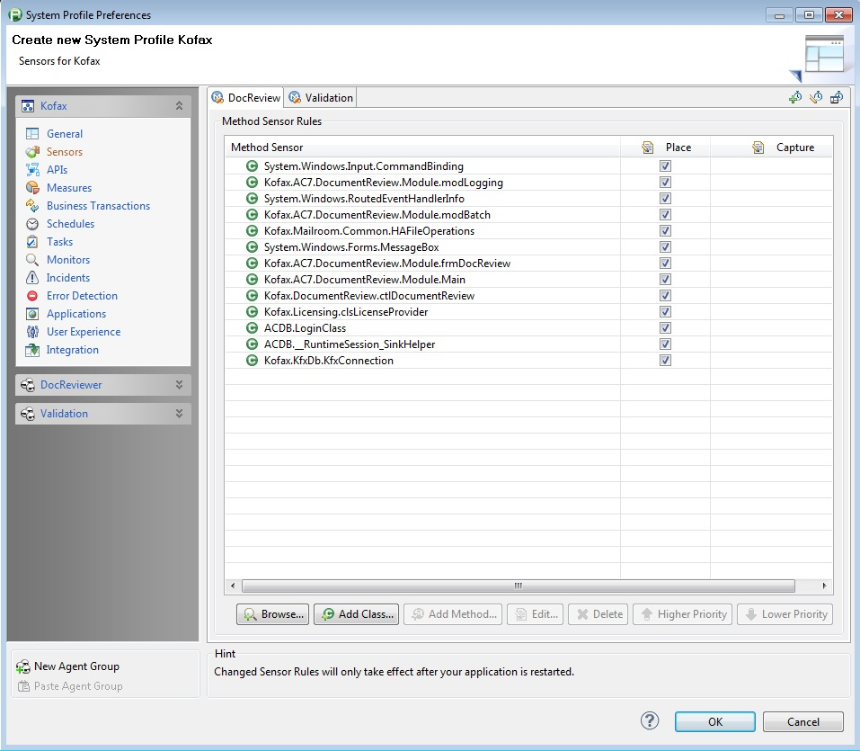

Kofax FastPack
Table of Contents (Start)
Kofax FastPack
Overview

Kofax is an integrated platform of applications that streamline the transformation of different document types into structured electronic information, ready for delivery into business systems and processes. Part of the suite includes document review and validation components. It is important to monitor and diagnose how these components are performing on the end users workstation. Kofax provides their own monitoring solution, but you can get performance metrics by instrumenting this in dynaTrace.
FastPack Details
|
Name |
Kofax FastPack |
|
dynaTrace Version |
4.x, 5.x |
|
Author |
Derek Abing |
|
License |
|
|
Support |
Community Supported
|
|
FastPack Contents |
Images
|
 |
|
|
Installation
Follow the following Steps:
-
Import the Kofax System Profile
-
Instrument and Configure your Kofax Application to map the agent group defined in the System Profile (uses .NET Agent)
-
Restart your application
-
Open the Kofax Kofax Dashboard